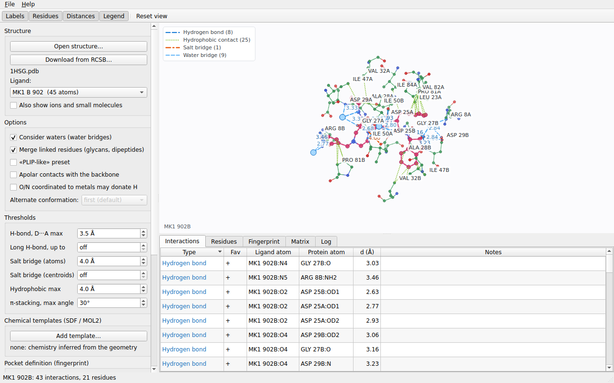
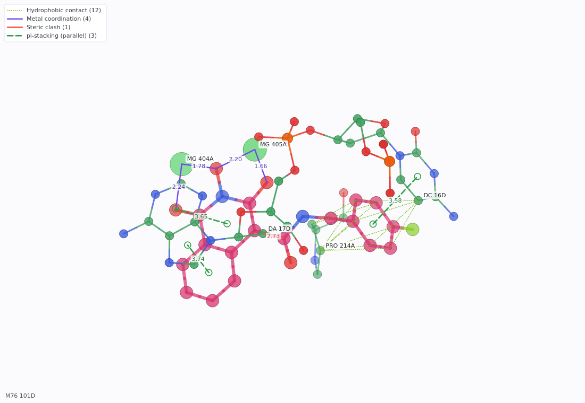
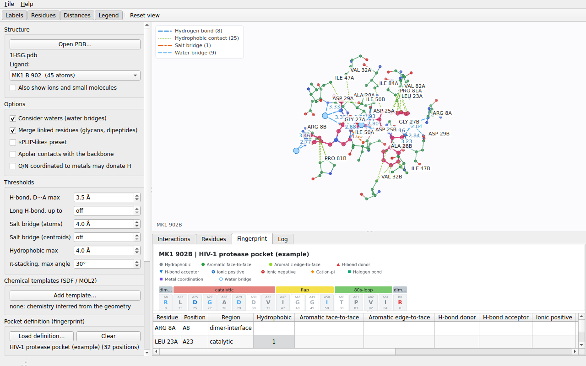
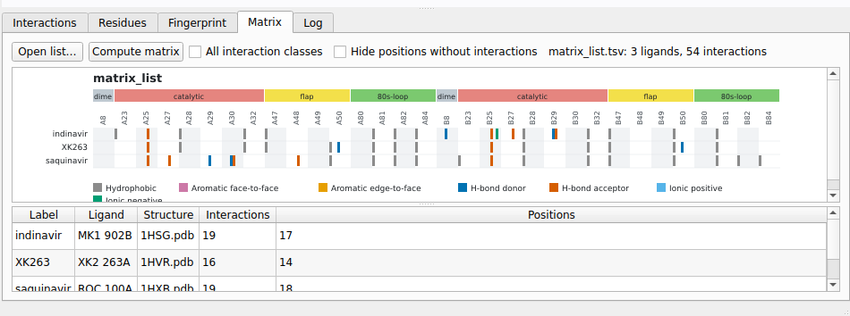

ligint-gui shows the ligand and the residues around it in 3D, lists the interactions in tables, filters them by type and draws the
interaction fingerprint. It runs the same analysis as the command-line program; every analysis comes with the command line that
reproduces it (see below).

Press F1 at any moment to open this manual at the page of the tab you are looking at.
Click Open structure... in the control panel or File > Open structure... (Ctrl+O), or drag a file onto the window, or give it
on the command line: ligint-gui 1AZM.cif. PDB (.pdb, .ent) and PDBx/mmCIF (.cif, .mmcif) files are read; the format is
recognized from the content (Input formats). Compressed files (.gz) must be decompressed first. If the file cannot be
opened, a message explains why and the error is also written in the Log tab.
The last folder you used is remembered between sessions.
File > Download from RCSB... (or the button of the same name in the Structure group) asks for the four-character PDB ID and the format (PDB or mmCIF), downloads the file in the background (the window stays responsive) and opens it. Structures that were already downloaded are not fetched again. If the transfer fails, the message is shown and written in the Log. See Downloading from the RCSB.
The Ligand list shows the ligands (HETATM residues) of the file, each with its name, chain, residue number and number of atoms:
AZM A 262 (13 atoms). Waters are never listed. Ions and molecules with fewer than 6 atoms are hidden unless you tick
Also show ions and small molecules. If the same ligand appears in several copies, each copy is a separate entry.
Covalently linked HETATM residues (sugar chains, dipeptides) are treated as one ligand unless you untick Merge linked residues.
| Control | What it does |
|---|---|
| Consider waters (water bridges) | Looks for water molecules that connect the ligand and the protein. Untick it to ignore all waters. |
| Merge linked residues (glycans, dipeptides) | Treats covalently linked ligand residues as a single ligand. |
| "PLIP-like" preset | Uses the criteria that make the results closer to those of PLIP: hydrogen bonds up to 4.1 A when the geometry allows it, salt bridges between the centers of the charged groups at 5.5 A, halogen bonds up to 4.0 A. It sets the matching threshold boxes. |
| Apolar contacts with the backbone | Also counts hydrophobic contacts with the protein backbone (C-alpha and carbonyl carbon); by default only side chains count. |
| O/N coordinated to metals may donate H | By default an O or N bound to a metal is considered deprotonated and cannot donate a hydrogen bond; this lets it donate. |
| Alternate conformation | Chooses the conformation of the residues that have alternate locations (altloc). first (default) keeps the first one of each residue. The list is filled with the conformations found in the file and is disabled when the file has none. A residue without the chosen conformation keeps its first one; the Log says for how many residues the choice was used. |
| Control | Default | Meaning |
|---|---|---|
| H-bond, D...A max | 3.5 A | Largest donor-acceptor distance of a hydrogen bond. |
| Long H-bond, up to | off | If set, also accepts longer donor-acceptor distances up to this value, but only when the geometry allows a hydrogen to point at the acceptor. |
| Salt bridge (atoms) | 4.0 A | Largest distance between oppositely charged atoms. |
| Salt bridge (centroids) | off | If set, salt bridges are judged between the centers of the charged groups, with this largest distance. |
| Hydrophobic max | 4.0 A | Largest distance of a hydrophobic carbon-carbon contact. |
| pi-stacking, max angle | 30 degrees | Largest angle between the normals of two aromatic rings for parallel stacking. |
All the other thresholds have fixed defaults in the window; they can be changed with options on the command line, and the window shows the command that corresponds to your settings. The meaning of each criterion is in Interactions and assumptions.
By default the donors, acceptors and charges of the ligand are inferred from its geometry. Add template... loads an SDF or MOL2 file of the ligand with its bond orders, explicit hydrogens and formal charges, which makes the chemistry exact. The ligand of the structure is matched to the molecule by coordinates, so the file must have the same coordinates as the structure (for example, a ligand file prepared from the same complex). The label below the button shows what was loaded; the Log says whether the template was applied or why not. Templates stay loaded when you open another structure. See Interactions and assumptions.
The Pocket definition (fingerprint) group loads a text file that maps residues to positions and regions of a binding pocket, used to draw the fingerprint. Load definition... reads it, Clear removes it. Without a definition the fingerprint lists the residues in contact, sorted by number.
Generate from GPCRdb... builds the definition of a GPCR pocket from the generic residue numbers that you choose (3x32 6x48...), read from a structure annotated by GPCRdb or from a table; it saves
the file, loads it and writes in the Log the command that makes it. See GPCR pockets.
Generate from KLIFS... builds the definition of a kinase pocket from a KLIFS mapping: it asks for the PDB ID, the chain and the source (a mapping file, or the KLIFS service in builds that have network support), where to save the file, works in the background and loads the result. A structure must be open first. See KLIFS kinase pockets, which also explains which alternate conformation to choose.
Press Analyze. The analysis runs in a separate thread, so the window stays responsive on large structures. When it ends, the view, the tables and the Interaction types list are filled. Change an option or a threshold and press Analyze again: the results are replaced.

The ligand is drawn with thick bonds, the residues in contact with thinner ones, ions as larger spheres and waters as light blue spheres. Colors follow the element; the carbons of the ligand are pink. Interactions are dashed lines colored by type, with their distance.
| Action | Effect |
|---|---|
| Drag with the left button | rotate |
| Drag with the right or the middle button | move |
| Mouse wheel | zoom |
| Double click | reset the view |
The Graphics options panel beside the view groups controls by purpose. Structure independently toggles the ligand, the interacting residues and the whole protein. The whole protein is shown as a lightweight C-alpha backbone trace, in its own layer; the ligand and contact residues remain independently visible. Enabling the full-protein trace reframes the camera to include it. Protein representation offers a thin C-alpha trace, a thicker tube-like backbone, or linked C-alpha beads. Camera > Focus ligand/pocket keeps the protein visible while framing the interaction site; Fit full protein shows and frames the entire trace. Reset view restores the initial orientation and resets zoom and pan. Interactions toggles residue labels, distances and the legend independently. File > Save image... writes the current view as a PNG.
The Interactions tab lists one row per interaction:
| Column | Content |
|---|---|
| Type | the kind of interaction, in the color used in the view |
| Fav | + favorable, - unfavorable (steric clashes and electrostatic repulsions) |
| Ligand atom, Protein atom | the atoms, as RES numberCHAIN:ATOM, for example THR 199A:OG1 |
| d (A) | the distance in angstroms (the distance between centers for rings and groups) |
| Notes | angles, the water of a bridge, "also hydrogen bond"... |
Click a header to sort. Selecting a row highlights that interaction in the 3D view.
The Interaction types list in the control panel shows only the types found in this analysis, each with its count. Untick a type to hide its rows in the table and its lines in the view; the data and the exports are not affected.
The Residues tab lists the protein residues that interact with the ligand: the residue, the number of contacts and the types of interaction it makes. It is a quick way to see which residues matter most.

The Fingerprint tab shows the interaction fingerprint of the ligand: a figure with one cell per residue (grouped by region when a pocket definition is loaded) and, below, the table of counts per class. The figure needs the Qt Svg module; without it the tab shows the table only. File > Export fingerprint... saves it as SVG, CSV or JSON, according to the extension you type.

The Matrix tab compares several ligands at once: Open list... (or File > Open ligand list for the matrix...) reads a list file, Compute matrix builds the
interaction matrix in the background, and the tab shows a heat map (with Qt Svg) and a table with the number of interactions and of positions of each ligand.
All interaction classes and Hide positions without interactions change what the matrix contains. File > Export matrix... saves it as SVG, CSV or JSON, by extension, and
File > Copy matrix command line copies the ligint --matrix command that reproduces it. The analysis settings of the left panel and the pocket definition that is loaded are used.
The Log tab records what happened: the file that was opened, how the ligand chemistry was obtained (template or geometry), the mean B-factor of the ligand with a warning if it is poorly defined, warnings about the input, the coordination sphere of the metals, and the command line of the analysis.
| Menu item | Writes |
|---|---|
| File > Export interactions (CSV)... | all the interactions of the analysis (also those hidden by the type list) as CSV, the same table that ligint --csv writes |
| File > Save image... | the 3D view as a PNG image |
| File > Export fingerprint... | the fingerprint as SVG (figure), CSV or JSON, by extension |
| File > Export matrix... | the interaction matrix as SVG (heat map), CSV or JSON, by extension |
After every analysis the Log shows the equivalent ligint command, and File > Copy command line (Ctrl+Shift+C) puts it in the
clipboard; File > Copy fingerprint command line gives the same analysis with --fingerprint svg and the pocket definition currently
loaded. The command contains only the settings that differ from the defaults, with the PLIP-like preset written out as the explicit
options it sets. It is quoted for POSIX shells (bash, zsh); on Windows the quoting may need adjusting. Template and pocket files appear with
their absolute paths. This makes an analysis made by hand easy to repeat in a script or to cite in a paper.
| Keys | Action |
|---|---|
Ctrl+O |
open a structure |
Ctrl+Shift+C |
copy the command line |
F1 |
open this manual (at the page of the current tab) |
Ctrl+Q |
quit |
Help > User manual (F1) opens this manual in its own window. The Contents tab lists the chapters and their sections, and the
Search tab looks for words in all the pages (a page matches when it contains every word) and lists the results with a context snippet.
The toolbar has Back and Forward (Alt+Left, Alt+Right), Home, Zoom in and Zoom out (Ctrl++, Ctrl+-) and, when the
HTML files of the manual are installed on this computer, Open in browser. Ctrl+F searches the current page. Links to web sites open
in your browser.
ligint 0.10.1 manual